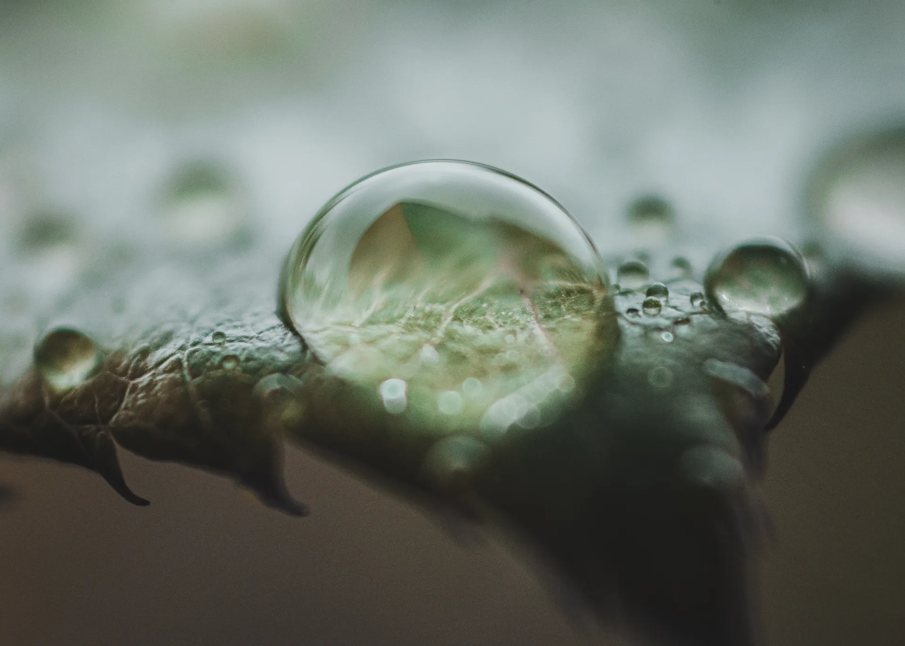
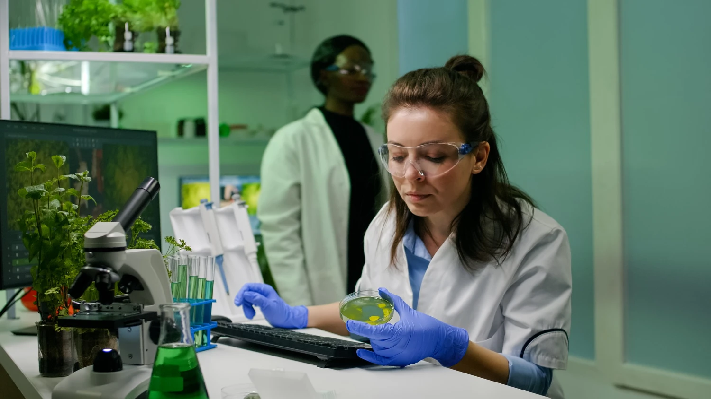
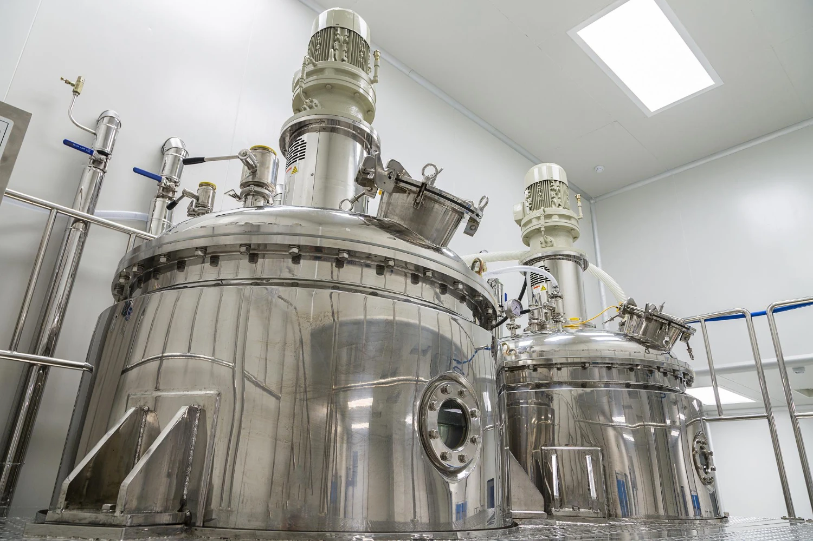
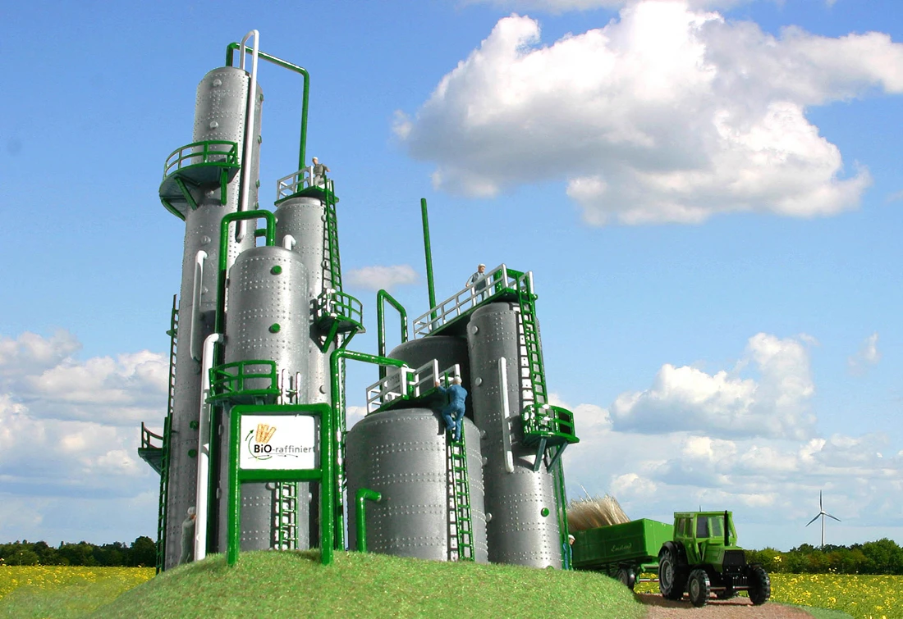
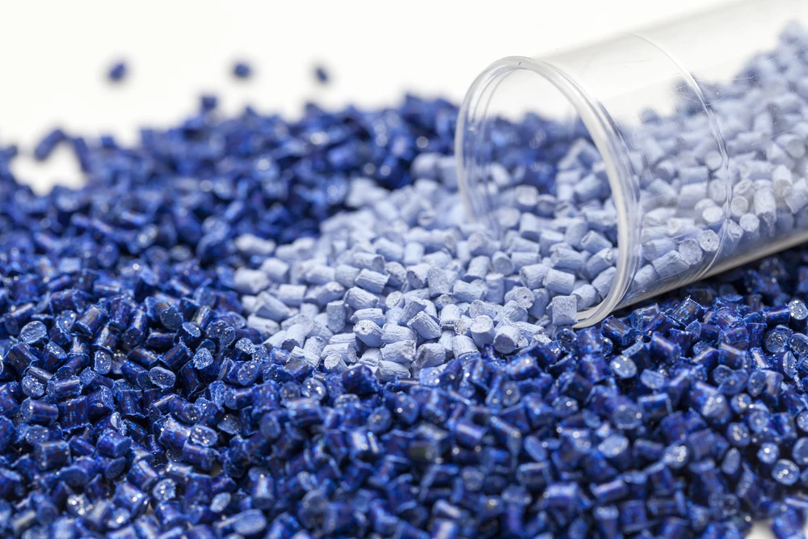
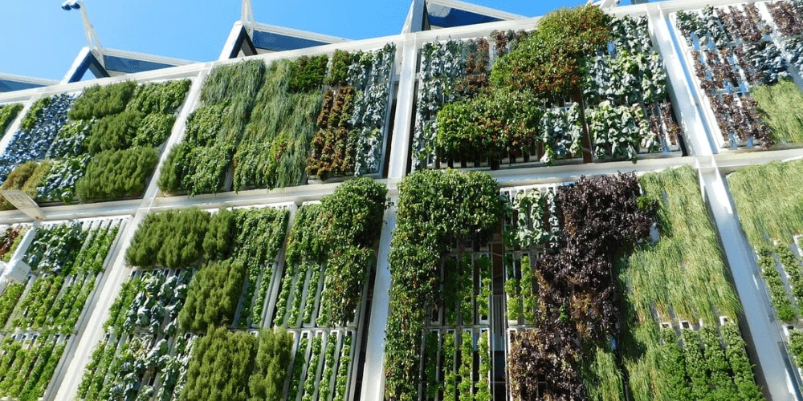

Energia Solare
Le celle fotovoltaiche e i sistemi solare-termici convertono la luce solare in elettricità con emissioni quasi nulle, grazie ai progressi nella chimica dei materiali verdi.
Scopri di più →Sfruttare il potere del design molecolare per creare un'industria chimica sostenibile, non tossica e rigenerativa.
Esplora la ScienzaLa chimica verde si interseca potentemente con i sistemi energetici di nuova generazione, riducendo la dipendenza dai combustibili fossili a livello molecolare.
Le celle fotovoltaiche e i sistemi solare-termici convertono la luce solare in elettricità con emissioni quasi nulle, grazie ai progressi nella chimica dei materiali verdi.
Scopri di più →I materiali compositi ad alte prestazioni sviluppati tramite sintesi verde rendono le pale delle turbine moderne più leggere, resistenti e riciclabili.
Scopri di più →La conversione catalitica di residui agricoli e rifiuti organici in carburanti e sostanze chimiche bio-based chiude il ciclo del carbonio in modo sostenibile.
Scopri di più →L'elettrolisi alimentata da energia rinnovabile produce idrogeno pulito, un vettore energetico ad alta densità il cui unico prodotto di combustione è l'acqua.
Scopri di più →
La chimica verde, detta anche chimica sostenibile, è la progettazione di prodotti e processi chimici che riducono o eliminano l'uso e la generazione di sostanze pericolose. Coniata da Paul Anastas e John Warner negli anni '90, è diventata un movimento globale che sta ridisegnando l'industria chimica dalle fondamenta.
La produzione chimica convenzionale genera miliardi di tonnellate di rifiuti tossici ogni anno. La chimica verde cambia il paradigma: anziché trattare l'inquinamento a posteriori, previene i rifiuti nella fase di progettazione molecolare, risparmiando energia, riducendo i rischi e abbattendo i costi contemporaneamente.





Trasformare oli da cucina usati, lubrificanti industriali e lipidi di alghe in biodiesel a bassa emissione è uno dei risultati più concreti della chimica verde.
Il biodiesel è un carburante rinnovabile e biodegradabile prodotto convertendo chimicamente i trigliceridi da oli di scarto o grassi animali tramite transesterificazione, sostituendo il glicerolo con il metanolo in presenza di un catalizzatore.
L'olio di scarto raccolto viene filtrato, poi fatto reagire con un alcool (tipicamente metanolo) e un catalizzatore basico (es. KOH) a temperature moderate (~60 °C). Il processo produce esteri metilici degli acidi grassi (FAME), il biodiesel e glicerolo recuperabile.
Riduce le emissioni di CO₂ nel ciclo di vita fino all'80% rispetto al gasolio. Biodegradabile in poche settimane. Compatibile con i motori diesel esistenti. Devia i rifiuti dalle discariche e dai corsi d'acqua, creando un modello di economia circolare a ciclo chiuso.